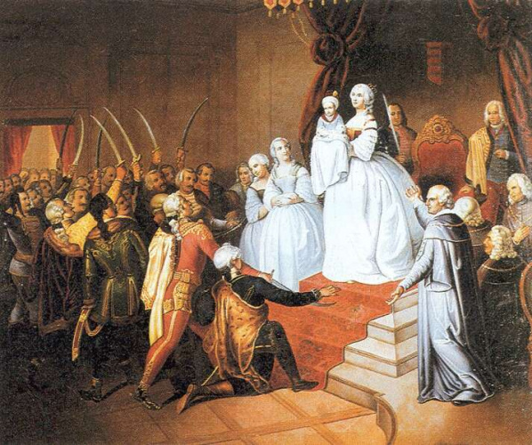

Mária Terézia, magyar királynőként II. Mária ( Bécs, 1717. május 13. – Bécs, 1780. november 29.) a Habsburg-házból származó, III. Károly király és Erzsébet Krisztina királyné második gyermekeként született német-római császári hercegnő, osztrák főhercegnő, magyar, cseh és német királyi hercegnő, 1740-től Ausztria uralkodó főhercegnője, magyar és cseh királynő, majd Lotaringiai Ferenccel kötött házassága révén 1745 és 1765 között német-római császárné, a Habsburg–Lotaringiai-ház „ősanyja”. A királynő negyven évig tartó uralkodása apja 1740-ben bekövetkezett halálával kezdődött, aki az 1723-as Pragmatica sanctio elfogadásával akarta biztosítani leánya számára az öröklést.
A nőági örökösödési rendet azonban többek között Poroszország, Bajorország és Franciaország is elutasította, előbbi 1740 végén még háborút is indított Szilézia meghódítására, amiből a közel kilenc évig tartó osztrák örökösödési háború született és amely területet Mária Terézia a későbbi hétéves háború során megpróbált visszaszerezni, sikertelenül. Magyarország számára is jelentős hatással bírtak későbbi felvilágosult abszolutista rendeletei, többek között az 1754-ben hozott kettős vámrendszer, az 1777-es Ratio Educationis, a Nagyszombati Egyetem reformja és Budára helyezése, és Fiume Magyarországhoz való csatolása is.
Osztrák örökösödési háború

1741. szeptember 11-én, két évvel egy vesztes török háború, és tizenkét éves törvényhozási kényszerszünet után Mária Terézia a Pozsonyba összehívott magyar országgyűléshez fordult, hogy segítsenek koronáját fegyverrel megmenteni. Mária Terézia jól tudta, hogy trónját csak a magyar rendek segítségével tudja megvédeni a porosz fenyegetéstől, és azt is, hogy a birodalom szervezete korszerűsítésre szorul. Mária Terézia, hogy megnyerje a magyarok támogatását, az összehívott pozsonyi országgyűlésen előterjesztette kívánságait. A magyar rendek kezdetben ellenállást mutattak. Az uralkodónő személyesen jelent meg az országgyűlésen, gyászruhát viselve, karján fiával, a gyermek II. Józseffel. Ez később a híres pozsonyi jelenet-ként lett ismert.
A fiatal királynő hatásos beszédet mondott, ezt követően mondták ki a jelenlévő magyar nemesek egybehangzóan: Vitam et sanguinem pro rege nostro!, azaz „Életünket és vérünket királyunkért!”. E közfelkiáltással kiálltak a király[6] mellett, aki cserében érvénytelenítette III. Károly király néhány magyarellenes intézkedését, illetve törvényben rögzítette a nemesi földbirtokok adómentességét, továbbá engedélyezte a hadseregben a magyar nyelvű vezényletet. A királyi engedmények fejében 11 magyar huszárezred (mintegy 35 000 katona) harcolt az osztrák örökösödési háborúban a Habsburg trónért Európa hadszínterein.
Kormányzati politikája
Mária Terézia megszerezte és meg is tartotta örökségét, s uralkodása negyven éve alatt tovább erősítette a dinasztia pozícióit. Következetesen és tudatosan szakmai szempontok alapján kereste tanácsadóit és vezető politikusait. A fő helyet közöttük Kaunitz herceg foglalta el, aki – még mint gróf – az örökösödési háborút lezáró béketárgyalásokon képviselte Ausztriát. Később párizsi követ, majd államkancellár (külügyminiszter) lett. Ő terelte új vágányra az osztrák külpolitikát. Az évszázados franciaellenesség után a hétéves háború idejére (1756–1763) tető alá hozta Versailles és Bécs szövetségét. Döntő szerepet játszott a belpolitikában is, többek között a magyarországi politika alapelveinek kidolgozásában.
Mária Teréziának szívügye volt az oktatás. A Nagyszombati Egyetemet 1777-ben Budára helyeztette. 1773-ban feloszlatta a jezsuita rendet (ekkor válik állami egyetemmé a nagyszombati), növelte az állami iskolák számát, erősítette az állam felügyeletét az egyházi iskolákban, kísérletet tett az egységes tananyag bevezetésére: elrendelte a közhasznú tárgyak felvételét, gyakorlatiasabbá tette az iskolai tananyagot (a történelem tantárgy is ekkor került be a tanrendbe). 1777-ben kiadott tanügyi rendelete, a Ratio Educationis az állam irányítása alá helyezte és egységesen szabályozta a teljes magyarországi oktatásügyet. A közhiedelemmel ellentétben nem írt elő általános tankötelezettséget. A gimnázium megteremtésével összekötötte az elemi és a felsőfokú oktatást, tanítóképzőket állított fel, bővítette az egyetemi karokat, illetve újakat alapított. Támogatta továbbá az egészségügyet is. Elrendelte, hogy gondoskodni kell a szegények, betegek, öregek, és árvák ellátásáról.
Magyarországi politikája
Mária Terézia 1754-ben bevezette a kettős vámrendszert, amely erősen visszavetette a magyar ipar fejlődését. Ezen vámrendelet lényege, hogy a birodalmat önellátóvá tegye. A magyarországi agrártermékekre a birodalmon belül alacsony kiviteli vámot szabtak, kivéve azokat a cikkeket, amelyeket az örökös tartományokban is termeltek. Az Ausztriából és Csehországból származó iparcikkekre alacsony behozatali vámot kellett fizetni, míg a magyar kivitelt ezen a téren megnehezítették.
Mária Terézia 1754-ben bevezette a kettős vámrendszert, amely erősen visszavetette a magyar ipar fejlődését. Ezen vámrendelet lényege, hogy a birodalmat önellátóvá tegye. A magyarországi agrártermékekre a birodalmon belül alacsony kiviteli vámot szabtak, kivéve azokat a cikkeket, amelyeket az örökös tartományokban is termeltek. Az Ausztriából és Csehországból származó iparcikkekre alacsony behozatali vámot kellett fizetni, míg a magyar kivitelt ezen a téren megnehezítették.
1764-ben történt az az eseménysorozat, amelyet a történetírás madéfalvi veszedelem (Siculicidium: a székelyek lemészárlása) néven ismer. A bécsi udvar megbízta Adolf Nikolaus Buccow tábornokot, hogy szervezzen Erdélyben két székely és két román határőrezredet. A székelyek többször föllázadtak az erőszakos sorozás és a nem megfelelő körülmények ellen. A Buccowot felváltó Siskovics József tábornok parancsot adott katonáinak Madéfalva ágyúzására, ahol a székelyek képviselői tanácskoztak. A mészárlásban körülbelül 400 személy, köztük nők és gyermekek, vesztette életét. Ekkor indult meg a székelyek tömeges kivándorlása Moldvába, illetve Bukovinába.